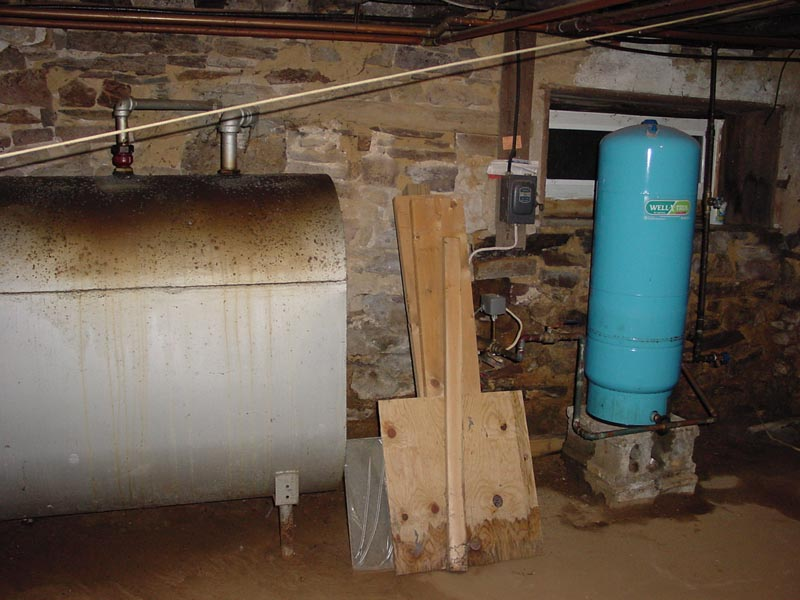

|  |
|
Continuing in the industrial decor, the left side of the great hall has the fuel-oil tank and the well pump. This single-handedly represents the intersection of two poor utility choices. Mixed with the electrical panel in the Great Hall this is a dynamic and daring social commentary on the concept of "suckitude." [ Turn around to go back to the Great Hall | Are those huge pipes embedded in that wall? | Look right at the corner | Look Back at the right side of the lesser hall ] |